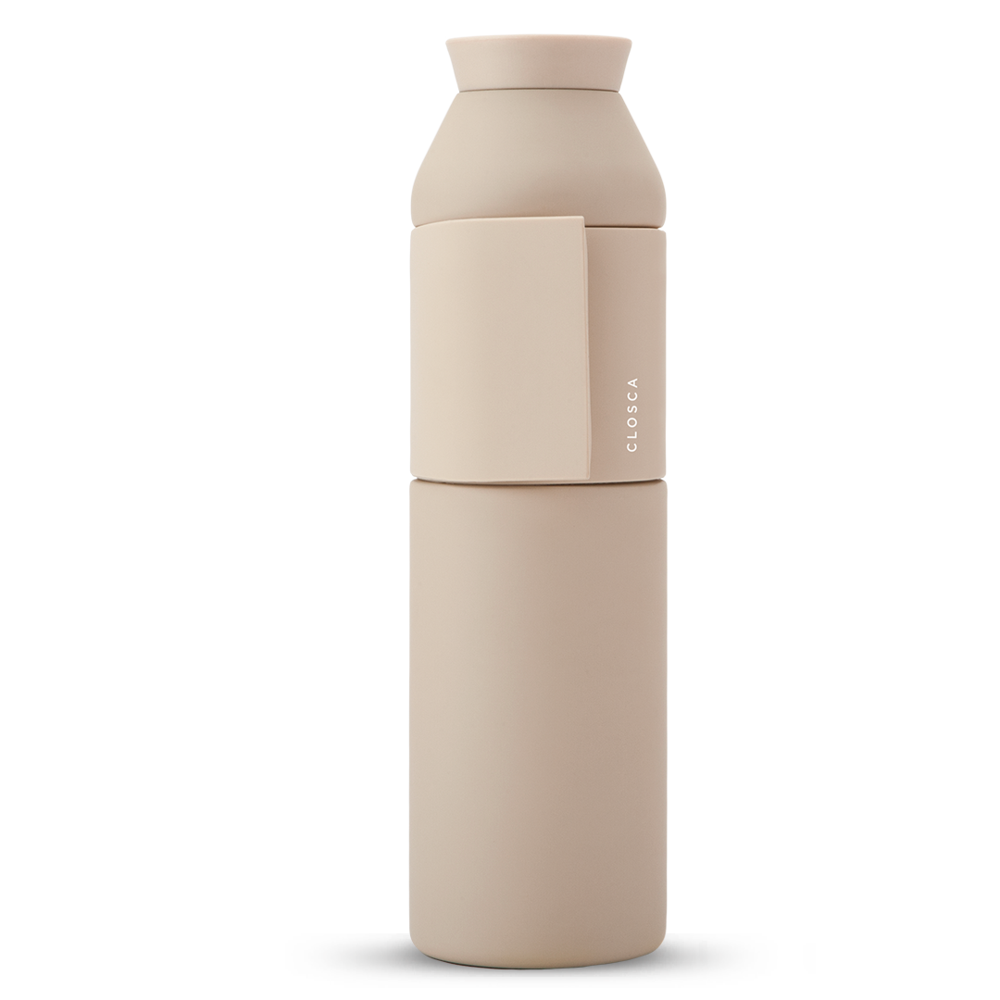
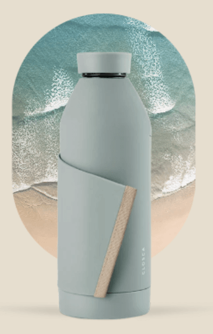
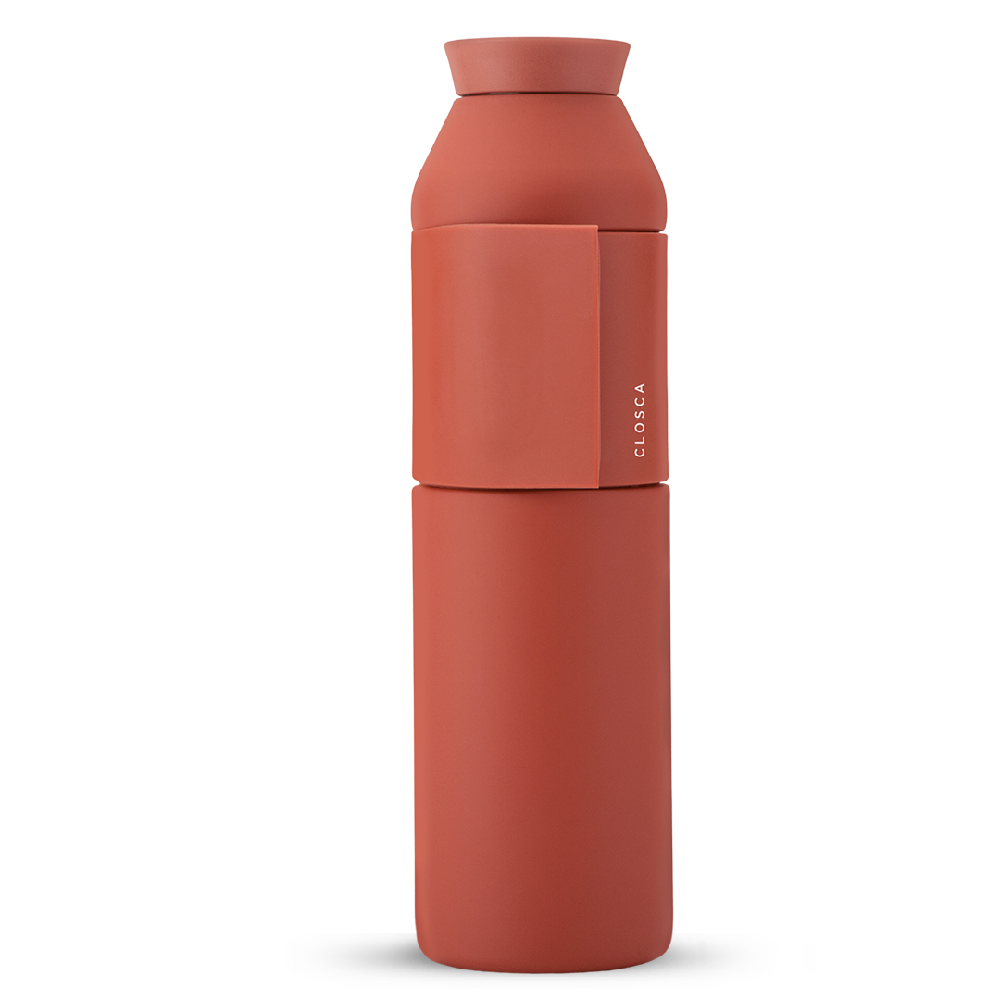
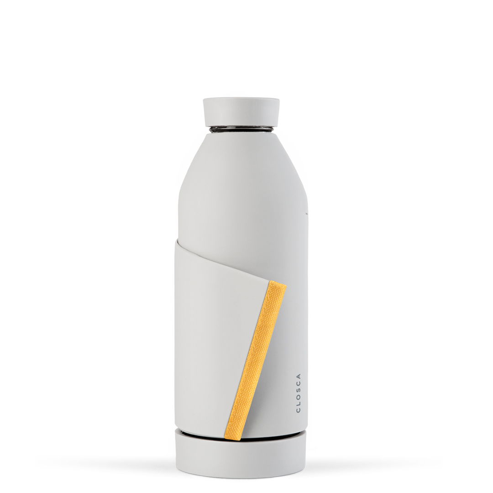

Dünya, Hindistan yüzölçümünün yaklaşık 11 katı büyüklüğündeki çölleştirilmeden menfi etkilenmektedir.
Savanlar karbon emicidirler, havadaki CO2 gazını emer ve dünya sıcaklık dengesini muhafaza ederler.



